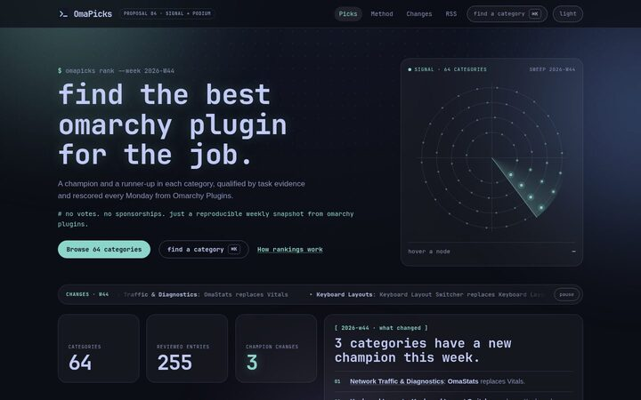

Proposal 04 current direction
Signal + Podium Terminal HUD · rounded bento · bone light mode
Signal's atmosphere, decoding headline, radar, command palette and glass cards, rebuilt on Podium's system: 20px tiles, 12px inner media, pill buttons and chips, a bento band of stat tiles, cursor-parallax pick tiles with a sliding "Compare →" pill, score dials on the category page, and Podium's warm bone light palette with teal kept as the brand colour.
- Toggle light in the header for the bone palette
- Hover the pick tiles and showdown cards; press / for the palette
- Open the category view for the dials and the central scoreboard